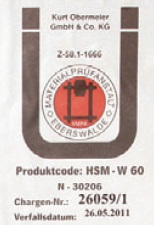

Für Bauprodukte hat GISBAU, das Gefahrstoff-Informationssystem der Berufsgenossenschaft der Bauwirtschaft, Produktgruppen gebildet, in denen Produkte mit vergleichbarer Gesundheitsgefährdung und demzufolge identischen Schutzmaßnahmen und Verhaltensregeln zusammengefasst sind. Dadurch wird die Vielzahl chemischer Produkte auf wenige Produktgruppen reduziert. Durch einen Produkt-Code, der auf den Herstellerinformationen (Sicherheitsdatenblätter, Technische Merkblätter und auf den Gebindeetiketten) aufgebracht ist, kann das eingesetzte Produkt eindeutig einer Produktgruppe zugeordnet werden.
Der Produkt-Code ist in der Form
Produkt-Code für Holzschutzmittel: HSM- . . . . . . . . .
angegeben.

Vom Produkt-Code für Holzschutzmittel werden Holzschutzmittel erfasst, die im DIBt-Holzschutzmittelverzeichnis aufgeführt sind bzw. eine allgemeine bauaufsichtliche Zulassung oder ein RAL-Gütezeichen erhalten haben.
Die bläuewidrigen Anstrichmittel sind den Produktgruppen M-BA 01 und M-BA 02 zugeordnet.
Im Internet (www.wingis-online.de) und auf der WINGIS-CD können dann über den Produkt-Code oder den Produktnamen umfangreiche Informationen (z.B. zur Gefährdung, zur sicheren Verarbeitung und zu persönlichen Schutzmaßnahmen) und Betriebsanweisungsentwürfe – in mehreren Sprachen – abgerufen werden.
Übersicht über die Produktgruppen für Holzschutzmittel
Holzschutzmittel, vorbeugend wirksam, auf Salzbasis:
HSM-W 10 Bor-Verbindungen
HSM-W 40 Kupfer-, Bor- und Kupfer-HDO-Verbindungen
HSM-W 44 Kupfer-, Bor- und Triazol-Verbindungen
HSM-W 47 Bor- und Quaternäre Ammonium-Verbindungen
HSM-W 50 Quaternäre Ammonium-Verbindungen
HSM-W 60 Kupfer- und Quaternäre Ammonium-Verbindungen
HSM-W 65 Chrom- und Kupfer-Verbindungen
HSM-W 70 Chrom-, Kupfer- und Bor-Verbindungen
Holzschutzmittel, vorbeugend wirksam, wasserverdünnbar / lösemittelhaltig:
HSM-LV 10 Wässrig/wasserverdünnbar
HSM-LV 15 Wässrig/wasserverdünnbar, reizend
HSM-LV 20 Lösemittelhaltig, entaromatisiert
HSM-LV 30 Lösemittelhaltig, aromatenarm
HSM-LV 40 Lösemittelhaltig, aromatenreich
Holzschutzmittel, bekämpfend wirksam, wasserverdünnbar / lösemittelhaltig:
HSM-LB 10 Wässrig/wasserverdünnbar, Bor-Verbindungen
HSM-LB 15 Wässrig/wasserverdünnbar, Quaternäre Ammonium-Verbindungen
HSM-LB 20 Wässrig/wasserverdünnbar
HSM-LB 30 Lösemittelhaltig, entaromatisiert
HSM-LB 40 Lösemittelhaltig, aromatenarm
HSM-LB 50 Lösemittelhaltig, aromatenreich
Bläuewidrige Anstrichmittel:
M-BA 01 Bläuewidrige Anstrichmittel, lösemittelverdünnbar, aromatenarm
M-BA 02 Bläuewidrige Anstrichmittel,wasserverdünnbar